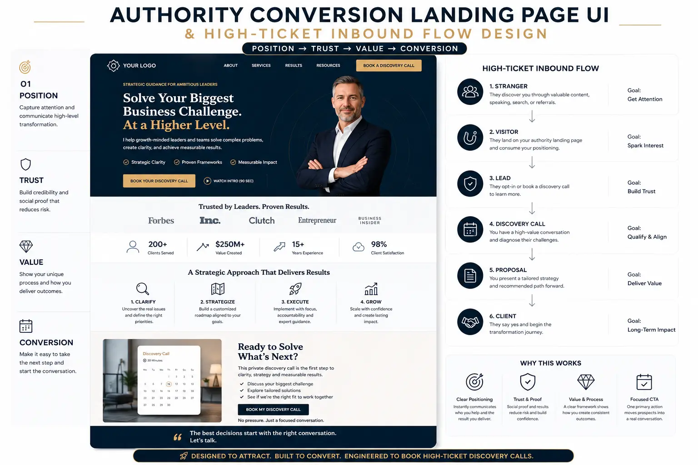
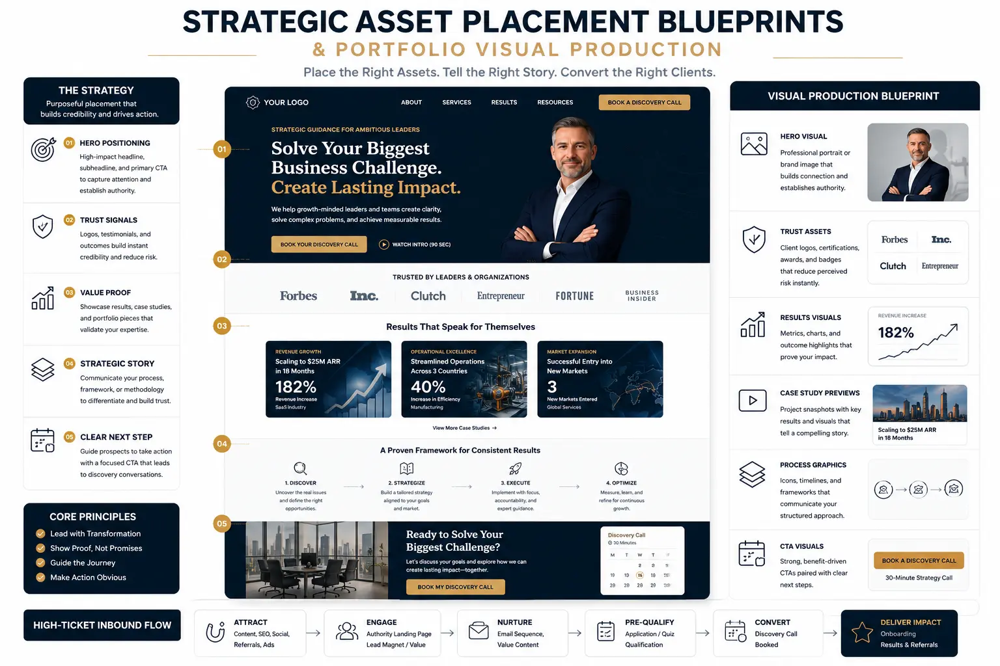

The 4-Section Homepage Framework That Maximizes High-Ticket Discovery Bookings
The Shift from Brochure Websites to Conversion Engines
In the rapidly evolving digital landscape, a professional's online storefront is their most critical brand asset. For years, executives, consultants, advisors, and agency owners have relied on standard corporate web designs that function as nothing more than interactive resumes. These sites feature long histories, list services, and link to various social media channels, but they fail to address the core requirements of high-value business development. If your goal is to Build Your Own Brand that generates high-end client engagements and high-margin consulting work, your website cannot simply be a passive digital brochure. Instead, it must be structured as a conversion asset. This requires a transition to an Authority Conversion Landing Page UI, a dedicated user interface that uses psychological and design principles to capture attention, build trust, and drive actions. By designing high-converting personal websites, you create a streamlined experience that speaks to premium buyers. Rather than forcing prospects to navigate multiple subpages, you present a clear story of your value and guide them toward a single booking CTA. To make this work, your website must be built on a High-Ticket Inbound Flow Design that maps out the customer's journey, qualifying them and driving them directly into your sales calendar.
The fundamental problem with multi-page corporate sites is cognitive load. When a prospect arrives on your homepage, they are looking for immediate validation that you understand their specific problems and have a structured, repeatable way to solve them. By organizing your layouts with strategic asset placement blueprints, you maximize credibility and guide their attention precisely. Every pixel, image, and line of copy must serve to move the prospect closer to a booking. Decoupling your revenue from manual outreach requires a system that pre-sells your value. When you successfully Build Your Own Brand, your web interface acts as your primary salesperson, presenting your credentials and filtering leads before they ever reach your inbox. Shifting your delivery model to structured, high-ticket services is only half the battle; you must also build the digital infrastructure capable of supporting it.
To convert high-value prospects, your website must behave like a premium storefront. This guide breaks down the exact four-section homepage framework used by industry leaders. By focusing on your unique value proposition, you can successfully Build Your Own Brand and command premium pricing. Each section is designed to guide the visitor through a logical cognitive journey, addressing their objections and demonstrating your expertise. From implementing strategic asset placement blueprints to adhering to website photography composition rules and optimizing your portfolio visual production, we will cover the key design decisions and strategic concepts required to build a premium storefront that performs day and night, turning cold traffic into booked discovery sessions.
Section 1: The Hero Header (Strategic Positioning & Eye-Level Trust)
The hero header is the single most important block of real estate on your entire website. Within the first three seconds of landing on your page, a visitor determines whether you are the authority they have been searching for or another generic service provider. A premium Authority Conversion Landing Page UI must hook the visitor's attention immediately. Instead of writing general statements like "Helping companies grow," your hero copy must clearly define who you are, who you serve, and the specific outcome you deliver. This is why having a strong positioning statement is the first step when you Build Your Own Brand.
Your hero header layout should follow strict strategic asset placement blueprints. Place your main headline in the center or left column, followed by a sub-headline detailing your target audience and your unique process. Immediately below the sub-headline, place a single call-to-action button, such as "Schedule a Private Strategy Briefing." Discussing Personal branding landing page tips such as placing a single, primary CTA in the hero section instead of offering multiple distracting choices is critical to maintaining visitor focus.
Equally important is your professional portrait. In high-converting personal websites, your photo acts as a visual anchor. However, standard corporate headshots are not enough. You must follow professional website photography composition rules to ensure your portrait builds authority. First, use high-resolution, professionally composed headshots and working-shots that match your premium positioning. Second, maintain negative space around the subject to integrate text overlays and headers cleanly. Third, align the subject's gaze direction toward your primary calls-to-action to naturally guide visitor attention. Finally, maintain color harmony with your brand styling, ensuring your photo looks cohesive with the rest of the page. Following standard website photography composition rules ensures your personal website looks high-end and builds immediate trust.
Integrating Personal branding landing page tips in your hero header also means adding a small social proof banner right below the CTA. Placing recognizable client logos or a line like "Trusted by 50+ Enterprise Founders" reduces the cognitive friction of taking the first step. This combination of outcome-focused copy and professional photography is key to converting high-ticket traffic from their first moment on your site. By avoiding visual clutter and focusing on clear, guided paths, you create a seamless user experience that pre-qualifies visitors and sets the stage for a premium engagement.
Section 2: The Authority Stack & Social Proof Grid
After hooking the visitor's attention, you must immediately build credibility. Premium buyers are skeptical; they have worked with unqualified providers and want proof that you can deliver. Section 2 is dedicated to establishing your authority by showing you have solved their exact problems before. This is where your strategic asset placement blueprints organize your credibility assets. Structure this section into an authority grid, starting with a row of client logos, media mentions, or industry certifications. This association builds trust instantly.
Following these logos, display results-focused client testimonials. Vague testimonials like "She was great to work with" do not help in converting high-ticket traffic. Premium clients want to see specific, quantifiable outcomes. This is where portfolio visual production becomes essential. Instead of using long blocks of text that visitors will skip, use visual elements to tell the story of your success. Transform your past projects into visual case studies that include a clear challenge statement, a process diagram, and data visualization charts that prove the return on investment.
By investing in high-quality portfolio visual production, you present your case studies in an easy-to-read, professional format. When prospects see visual proof of your ability to solve their exact challenges, they feel much more comfortable booking a call. This approach is a core element of high-converting personal websites, building authority before asking for a commitment. By presenting your achievements as structured data rather than self-promotional text, you build trust with sophisticated buyers who value clear results over hype.
Decoupled Revenue Growth
By implementing a structured High-Ticket Inbound Flow Design, you separate your business revenue from your personal calendar. This allows you to scale sales and attract premium partners without increasing your working hours, helping you to successfully Build Your Own Brand.
Optimized Conversion Layouts
Shifting to a dedicated Authority Conversion Landing Page UI minimizes friction and guides prospects through a logical cognitive journey. By displaying the right elements at the right time, your site becomes a high-yielding lead generation system.
Strategic Credibility Stacks
Leveraging strategic asset placement blueprints allows you to showcase social proof, logos, and testimonials where they have the highest psychological impact. This positions you as the ultimate authority in your space, ready to convert cold traffic.
Pre-Qualified Booking Flow
Using advanced Personal branding landing page tips, you establish a qualifying form before the booking calendar. This ensures that only high-budget, high-intent prospects secure time on your calendar, protecting your valuable hours.

Section 3: The Signature Methodology & Process
After establishing your credibility, you must explain how you deliver results. High-ticket buyers do not buy hours; they buy outcomes and structured processes. If you want to stand out from competitors who offer generic services, you must showcase a unique, branded framework. This section of your Authority Conversion Landing Page UI should explain your signature methodology step-by-step.
Instead of using generic terms, structure your process into a 3-step or 4-step framework. Name each phase to create intellectual property that you own. For example, instead of saying "We analyze your business," label it "Phase 1: Position Auditing & Diagnostics." This branding helps you Build Your Own Brand that commands premium pricing.
This section is where your High-Ticket Inbound Flow Design connects the client's pain points to your solutions. Break down each stage of your methodology to show the input required from the client, the steps your team takes, and the outcomes generated at each phase. To make this section highly readable, use custom icons and timeline graphs. This use of portfolio visual production ensures that even if a visitor only spends a minute scanning this section, they understand your expertise.
By demonstrating that you have a structured, repeatable system for delivering results, you remove the perceived risk of working with you. This makes it easier to justify a premium investment, facilitating the process of converting high-ticket traffic into booked discovery calls. When prospects understand the structure of your delivery, they enter the next section pre-sold on your capability, knowing they are engaging with a systematic expert rather than a generic freelancer.
1. Multi-Step Qualifying Forms
Instead of using basic contact forms, integrate pre-qualifying question flows. Ask about revenue, project timelines, and business challenges. This filters out low-intent users, helping you focus exclusively on converting high-ticket traffic.
2. Integrated Calendars
Connect your calendar booking tool directly into your High-Ticket Inbound Flow Design. This seamless integration allows pre-qualified prospects to book their discovery calls instantly, reducing drop-offs and scheduling friction.
3. Visual Authority Reinforcement
Position high-impact images that adhere to website photography composition rules next to your scheduling tool. This final touchpoint of visual authority reassures prospects of your premium position as they book their call.

Section 4: Pre-Qualification & Calendar Integration
The final section of your homepage is where the conversion happens. In traditional websites, this is usually a basic "Contact Us" form. However, for consultants and agency owners seeking premium clients, this approach is a bottleneck. A simple form leads to a high volume of low-quality inquiries, forcing you to waste hours on unproductive emails and introductory calls.
To build a high-performance booking system, you must implement a pre-qualification flow as the final stage of your High-Ticket Inbound Flow Design. Instead of directing visitors to a generic calendar link, embed a multi-step qualification form directly on the page. This form should ask key qualifying questions such as current business revenue, budget range, and timeline. By asking these questions, you filter out unqualified leads and gather critical data that you can use to prepare for the discovery call.
If a prospect does not meet your minimum criteria, the form can automatically redirect them to a resource page or a lower-ticket offer. If they are qualified, they are instantly redirected to your calendar scheduler to book their session. This approach is one of the most effective Personal branding landing page tips for managing your time. It ensures that every call on your calendar is with a pre-qualified prospect who has the budget and intent to work with you.
By combining smart forms, calendar tools, and your visual assets, you create a seamless conversion flow that turns qualified visitors into booked discovery calls, maximizing your success at converting high-ticket traffic. By eliminating scheduling back-and-forth and pre-qualifying leads, you protect your calendar and ensure your sales conversations are focused on matching solutions to qualified needs.
Strategic Implementation: Putting the Framework Into Action
Building a premium personal brand homepage requires combining messaging, media production, and conversion technology. To help you implement this 4-section framework, here is a step-by-step roadmap:
First, define your positioning and strategy. Before you write copy or take photos, clarify your brand's core positioning. Define your target audience, identify their challenges, and articulate your unique methodology. If you want to Build Your Own Brand successfully, you must have a clear value proposition. Once your strategy is defined, outline your homepage layout using strategic asset placement blueprints to determine where each copy element and visual asset will sit. Organizing your content strategically prevents visitors from dropping off due to information overload.
Second, create your media assets. Next, produce the visual media that will populate your homepage. Work with a professional photographer to capture portraits that follow website photography composition rules, ensuring you have high-resolution images with plenty of negative space for text overlays. Simultaneously, work with a designer on portfolio visual production to transform your case studies into clean, professional charts and diagrams. High-quality media is essential for establishing authority and maintaining a premium look, which are key characteristics of high-converting personal websites.
Third, build the conversion interface. With your copy and media assets ready, build the physical pages of your website. Set up your Authority Conversion Landing Page UI layout, placing your value proposition in the hero header, your authority stack in Section 2, your proprietary methodology in Section 3, and your booking form in Section 4. Integrate your form with your calendar scheduler, ensuring that leads are captured automatically and aligned with your overall High-Ticket Inbound Flow Design.
Fourth, drive traffic and optimize. Once your homepage is live, begin driving targeted traffic to the page. Monitor your page's performance using web analytics tools, paying close attention to scroll depth and form completion rates. Refine your copy and test different CTAs to continuously optimize your site for converting high-ticket traffic. Understanding the psychology behind high-converting personal websites is key to scaling your agency and maintaining a highly profitable consulting system.
Ultimately, building a personal brand homepage using this four-section framework is about creating a valuable, independent business asset. By shifting from a simple online profile to a structured conversion engine, you take control of your lead generation. By combining professional photography, visual case studies, and automated qualification systems, you build a storefront that builds authority and consistently delivers high-value client bookings, allowing you to scale your business and achieve long-term growth.
Key Topics
Ready to Build a Homepage Framework That Converts Traffic into Discovery Bookings?
At The PhD Ads in Madurai, we specialize in helping consultants, founders, and premium service providers build high-converting personal websites that capture and pre-qualify leads. From designing Authority Conversion Landing Page UI layouts and mapping your strategic asset placement blueprints to implementing a seamless High-Ticket Inbound Flow Design and crafting high-impact assets through portfolio visual production, we provide the strategic guidance and technical execution you need to successfully Build Your Own Brand. Let us help you transform your homepage into a powerful conversion asset that generates high-ticket discovery bookings on autopilot.
Email: team@e2o.in